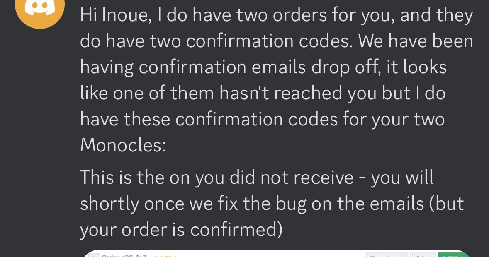

Monocleことはじめ
概要
AppleGlass出るのかなー楽しみ。
というわけでARGlass? のちっこいやつ、monocleが届いたので使って遊んでいる。
これ
買う
記録を見たら、ここで買うのを決心、一個買ってる。
2023/03/24
https://twitter.com/toru_inoue/status/1639197476522688513
注意：この会社すごくて、購入してもすぐには購入確認メールが来ません。
4日とか経つと来ます。
その旨は買う直前にちゃんと書いてあります。あるけど、自分の購入履歴が見れるページもねーーーーのよw
あれ、通知来ないなー、確認できないなー、って思って、なんか購入ミスったのかと思い
もう一度、まあ購入直前で引き返せば平気か？って思って
二個目を買ってしまう。
この時は、、やってしまった、、まあ、後でキャンセルすればいいか、ごめん、とか思ってた。
で、まだおもしろ状態が続く。
2023/03/28
発送確認メールが1通 とどく。
で。発送メールが１件しかこない。
二通来たら一通キャンセルしようとか思ってたのがこの頃。
→カードの支払い調べるとちゃんと2回払ってるのが確定
→こわ、、サイトからメールしよ
→failed to deliver、、！！
→は？、、は、、、？ サイトに書いてあるメアドが到達不可で帰ってくる。 は？
→Discordがあるのでそこに向かう。特定のそういうサポート口は無いのでその辺で「二個買ったとおもうんすけど、、」って伝えると、

意訳1: 二個買ったのであっとるで！ で一個発送予定メール送るの失敗したわw ごめん。とのこと。
意訳2:(これはスクショを無くした)
そんでお問合せメアドな、ごめん、サイトに載ってたの古いやつだったわガハハ！
治しとくね！！(そうですか)
そっかあ。
ちなみにこの頃には、二個目の買い手が知り合いから出てきていて、じゃあいっか、二個きたら送るね、とかなってて、もう逆に安心。
で待ってたら、ちゃんと二個きた。
2023/05/23
https://twitter.com/toru_inoue/status/1660863736100397057
時系列まとめ
3/24 購入
3/28 購入確認メールくる(1通のみ)
4月中 Discordでおはなし、解決
5/23 到着
動かしてみる
ドキュメントのページをもとにセットアップしてく
つってもファームウェアのアプデくらいしかやることない感じだけど。
WebREPLかVSCodeのextensionでmonocleのやつがあり、それがかなりいい感じなので、VSCodeを使っての開発がおすすめ。
ファームウェアアプデコマンドとか
https://docs.brilliant.xyz/#how-do-i-update-the-firmware
開発環境構築
1. VSCodeにmonocle extension入れる
2. VSCodeで⌘+shift+p → initialize new project folder
3. monocleをケースから出すと自動的に起動するので、2で作ったプロジェクトの下のほう、赤く輝くmonocleボタンを押すと、、
自動的にmonocleとbluetoothで繋がる。で、接続できるとVSCodeのTERMINALでREPLが動く。
4. であとはmicroPythonを書く + 保存すると実機に自動的にコードが送り込まれ、表示が切り替わ、、、らない！
虹色の表示のまんま。なんで？
ファームウェアアプデ以外にやることがあったか？
→ ドキュメントにはなかったけど、Discordを漁ったら情報があり。
5/23? 以降に配布されたファームウェアだと、fpgaのアプデが掛からないのか、fpgaを自力でアプデする必要がある、ぽい。
VSCodeのmonocle extension入れると左のバーにmonocleのアイコンが出るのがあり

ここでね、見つけるわけですよ。燦然と輝く Update FPGA ボタンを。
ちなみにこのボタンは最新状態でも元気に出る。
monocleをVSCodeに接続した状態で押すと、FPGAが無事アプデされ、、それ以降は、書いたコードの内容が、monocleのディスプレイにも反映されるようになった。
エラーも全然出ないし、見た目は虹色のまんまだしで、数日悩んだが。解決できた。
バグ
VSCodeと接続でき、FPGAアプデで表示も切り替えられるようになった段階で、タッチインターフェースの反応とかもいい感じになったんだけど、
次のようなバグを確認してる。
1. 文字の表示位置がバグる
表示座標を0,0でセットしても、xが真ん中から表示されるようになる。yも0からずれてるかも。
device.reset() をコード上で書いて、左右どっちかのタッチから実行したら、再起動完了した頃には問題なく動くようになってた。
再発したらタッチ → リセットで問題が消える。開発用にVSCodeを繋いでる時しか起きないかもしれない。
2. VSCode繋いだ状態だと、importが無視される
いまだに現象をよく掴めていないが、コードを保存するとmonocleにコードが転送されて、monocleが一瞬で再起動される。んだけど、
その際コードの全部が更新されるわけではないらしく、microPythonのコードで書かれてるimportがされなかったりする。
こうなったらコードのdevive files/main.pyとかを右クリックから手動で Upload File To Device を実行すると、ちゃんと更新される、、ことがある。
めんどくさいので自分は左タッチにresetを仕込んでて、困ったらresetしてる。resetして再起動すると送り込んだコードがきちんとロードされてるっぽい。
が、この方法には「毎回VSCodeとのbt接続が切断される」という悲しい副作用がある。
まーーーべつにいいんすけどね～～。
豆知識
・再帰で関数を呼ぶと4~5層くらいで死ぬ。
ちゃんとwhileとタイマーみたいなものを使うと良い。
・フレームレートみたいなものは持ってない。まあそりゃそう。
・日本語は表示されない
別に困ってないが、方法はあると思う。
・電池が持つ時間は表示の明るさと面積にだいぶ関係してそう
明るさが5段階で指定できて、一番暗くてもまあ十分読める。
その状態でVSCodeで開発しながら見てると、だいたい1時間くらいでバッテリーが0になる。
充電時間もかなり高速な感じなので、うーん、充電しながら開発したいが、、
シミュレータみたいなものがあるんだろうか。
・LEDは無灯火、弱く点灯状態と強く点灯状態があり、REDとGREENの2つのLEDがある。
赤は、monocleの起動中は弱く点灯状態でつきっぱなしになるっぽい。
といってもつけてる側からは全然見えないので、開発中にその辺に置いてコードが変更されたら光る～とかすると楽。
総評
カラー表示できて軽くてカメラ付きで画像表示できてbluetoothで他デバイスと通信できてタッチ取れてマイクついてて、って感じで、
よく詰め込んだな～これ。
挙動もめちゃくちゃ軽快なので、良い。
これで視界の片隅に表示出したりする。